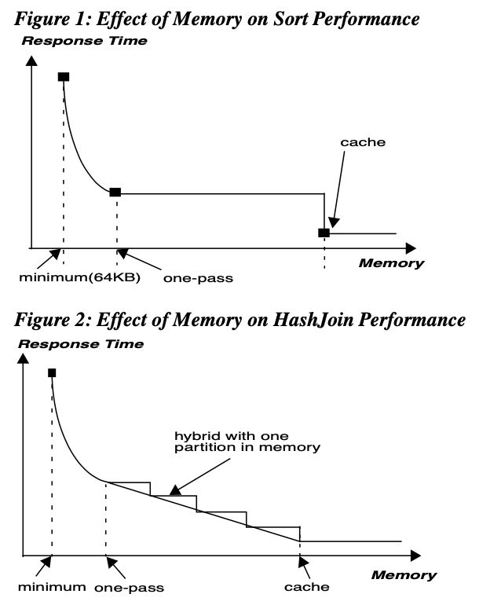
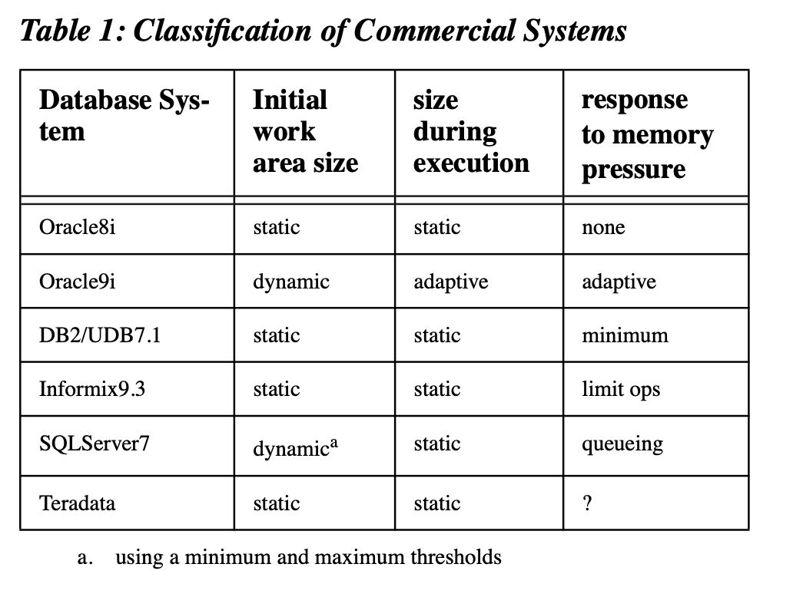
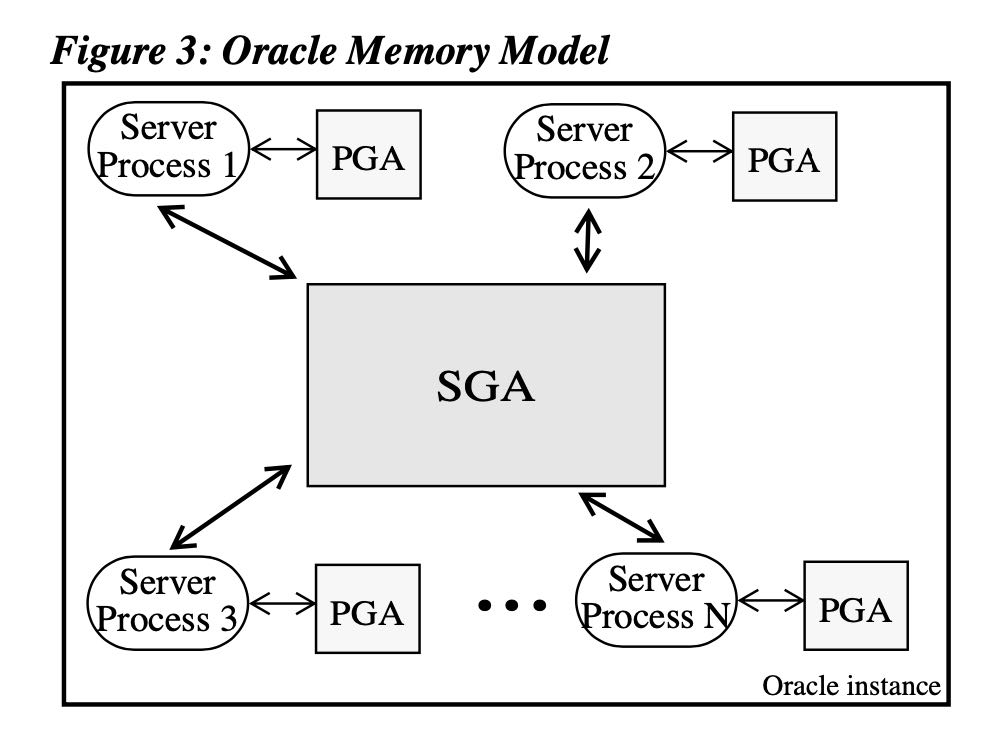
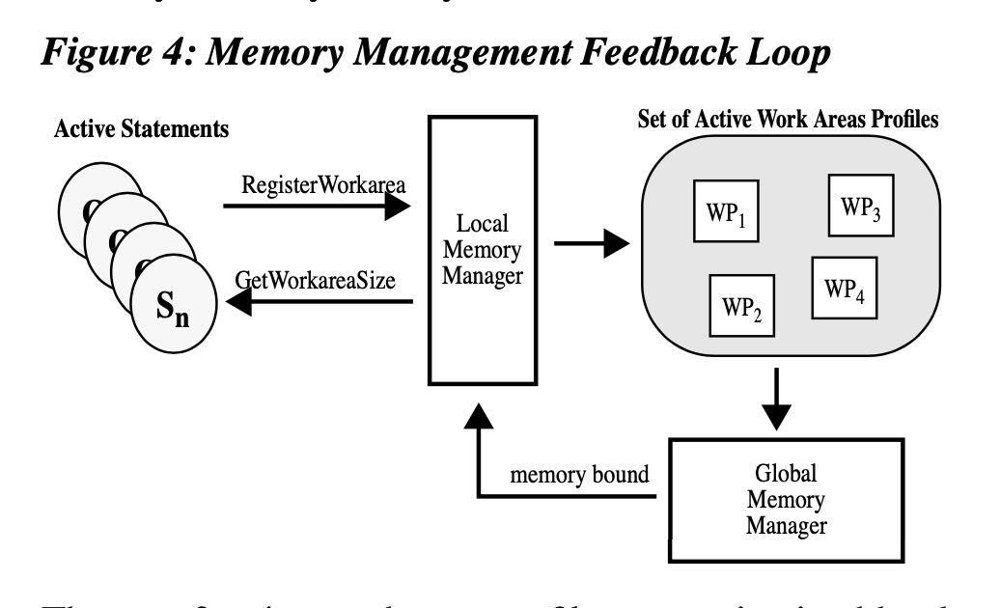
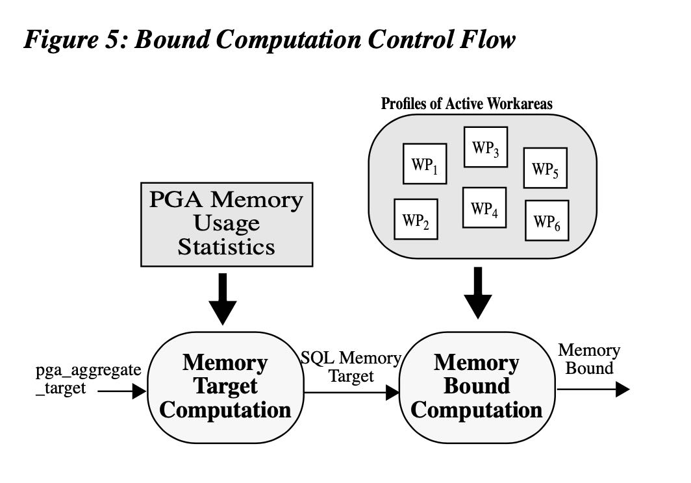
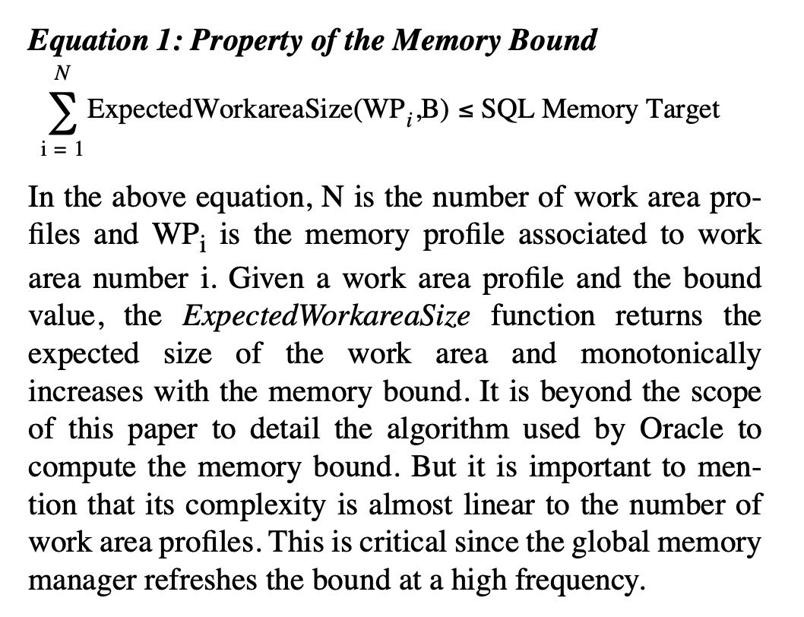
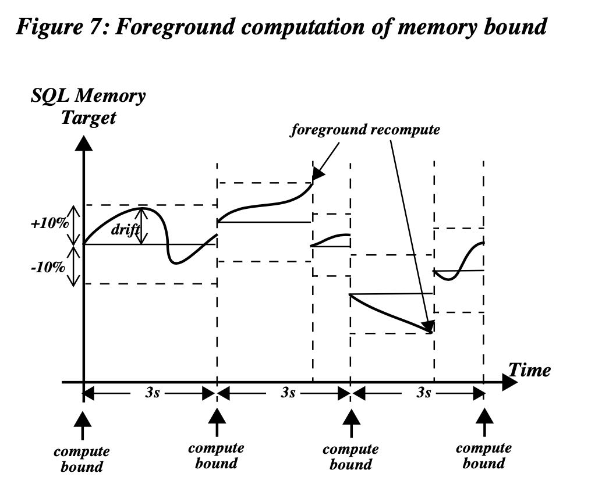
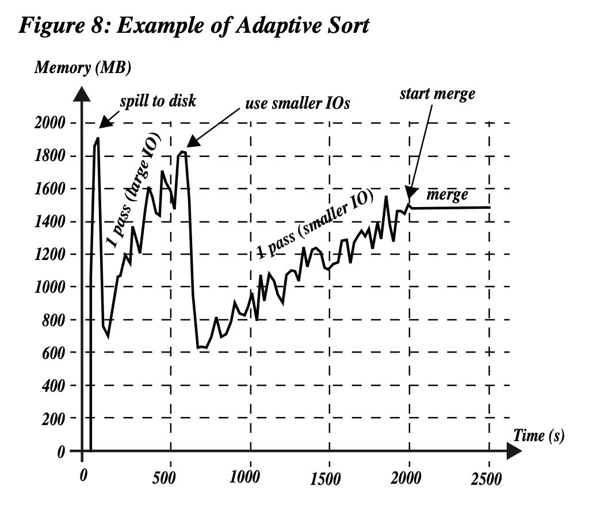

SQL MM in Oracle9i
Table of Contents
2002年VLDB，Oracle9i这个产品2001年就出来了，所以这篇论文的实现估计有点过时，但是我感觉SQL MM大体架构应该是不变的。可以认为是两层调度： a. 先确定每个process可用内存 b. 确定每个operator的memory bound c. operator进行自适应实现。
1. introduction
sql operator都是可以针对内存情况有不同的自适应实现，比如sort可以切换成为one-pass/multi-pass, hash-join可以切换成为hybrid hash join的方式将一部分workset spill出去等等。sql operator必须有自适应的实现，这个是实现mm的前提。

Figure 1 (sort) and Figure 2 (hash join) show the response time of the sort and hash-join operators as a function of the memory allocated by the operators. We are interested in the one-pass and cache points on both curves. The one- pass point is the start of the area where the operator runs in one-pass mode, and the cache point corresponds to case when the work area size is equal to the cache size. The sort curve is flat between these two points because a sort opera- tor doesn’t benefit from additional memory if it cannot use the cache size. The hash-join curve decreases in a step-like shape between the one-pass and cache points. Each step corresponds to an extra build partition that can be kept in memory. Contrary to the sort, the hash join can benefit from additional memory between the one-pass and cache points.
这篇文章主要说的就是如何根据workload, 来给这些sql operator动态调整mem limit.
In Oracle9i, we introduced a new memory manager that dynamically adapts the memory allocation based on the operation’s need and the system workload. This improves both manageability and performance. The manageability is improved by relieving the DBA from his “role” of find- ing optimal values for memory configuration parameters. The performance is improved by allocating the memory to operators to maximize throughput and make the operators dynamically adapt their memory consumption to respond to changes in the workload.
2. related work
文章提到了几种MM的方法，都有各自的问题：
- 给每个operator固定内存大小：operator mem usage，dop, workload变化这些都没有考虑
- 根据input size来预估每个operator的内存大小：估计误差，累加起来可能会over-allocation.
- 确保新加入的operator大小不会超过总体内存：这个对于后来的operator很不利，可能之前其他operators占用许多内存。
文章还对比了几个商业系统的MM，主要是3个方面区分：
- initial work area size. 初始期间内存是否可以调整
- work area size during execution. 指定期间内存是否可以调整
- response to memory pressure. 系统如何应对内存压力。
看上去只有oracle 9i在MM上可以动态地进行调整

3. Oracle MA
Oracle MM结构大致如下
- SGA(system global area) 这个用于维护系统内存比如buffer cache/library cache
- `db_cache_size` 可以控制buffer cache大小，最近访问的block data等
- `shared_pool_size` 可以控制library cache大小，包括metadata, sql cached plan等
- PGA(process global area) 这个用于每个process/查询的内存管理
- `pga_aggregate_target` 可以控制PGA总体大小

PGA总体大小是固定的，文章接下来说的就是怎么控制每个PGA，以及如何给不同的sql operator设置memory limit.
4. PGA MM
4.1. overview
整体交互逻辑是这样的：
- active statements 通过 local memory manager 注册自己operators以及更新每个operator占用的内存情况
- active statements 通过 local memory manager 拿到自己operator memory bound.
- local MM维护和更新这些active work area profiles. 它里面包含个query operators的执行情况。
- global MM定期去分析所有的work area profiles, 然后计算出每个query operator memory bound.
可以看到大体结构是一个一级调度方案，由global MM去分析所有的local MM profiles, 然后判断每个local MM的operator memory bound.

When a SQL operator starts, it registers its work area profile using the “local memory manager” services. A work area profile is the only interface between a SQL operator and the memory manager. It is a piece of metadata which describes all the characteristics of a work area: its type (e.g. sort, hash-join, group-by), its current memory requirement to run with minimum, one-pass and cache memory, the number of instances of that work area (effectively the degree of paral- lelism of the operator), and finally the amount of PGA memory currently used by this work area.
The set of active work area profiles are maintained by the local memory manager in shared memory (SGA). This set is always mutating. First, new work area profiles are added when memory intensive SQL operators start processing their input rows. These profiles are removed when corre- sponding operators complete their execution. Second, the content of each work area profile is frequently updated by its corresponding SQL operator to reflect its current mem- ory need and consumption. Hence, at any point of time, the set of all active work area profiles closely captures the PGA memory need and consumption of the Oracle instance.
The global memory manager is a background daemon which indirectly determines the size of each active work area by publishing a “memory bound” at a regular inter- val, generally every three seconds. The memory bound is automatically derived from the number and the character- istics of all active work area profiles. It is used to constrain the size of each work area. Hence, the memory bound is high when the overall memory requirement of all active work areas is low and vice-versa.
The feedback loop is closed by the local memory manager. It uses the current value of the memory bound and the cur- rent profile of a work area to determine the correct amount of PGA memory, called expected size, which can be allot- ted to this work area. The expected size is checked period- ically by SQL operators which are then responsible to adapt their work area size to the specified value.
4.2. memory bound
operator memory bound 分为两步来计算：
- 首先计算出应该给这个PGA多少内存，叫做 `SQL Memory Target`. 这个计算过程没有怎么细说，可能根据PGA使用内存情况来划分。
- 然后根据PGA多少内存，计算每个operator memory bound. 这个有个确定性算法，文章后面有说。

这个B有点类似于使用一个二分方法，expected work area size 这个函数应该是单调递增的。我们选择一个尽量大的B，但是不能让总体内存大小超过 sql memory target.

这个函数还有些requirements. 其中rule6 比较有工程意义：单个expected memory 如果是串行不超过5%, 如果是并行的话不超过30%。
Based on the work area profile and the bound value, the Expect- edWorkareaSize function determines the size of the work area using the following simple rules:
- rule 1: the expected size can never be less than the minimum memory requirement.
- rule 2: the expected size can never be more than the cache requirement.
- rule 3: if the bound is between the minimum and the cache requirement of the work area, the expected size will be equal to the memory bound, except if the operator is a sort. The reason is that, as shown in Sec- tion 1, the sort does not benefit from more memory than the one-pass memory size unless it can run cache. Hence, if the operator is a sort and the bound is between one-pass and cache, the sort will get only one-pass memory requirement.
- rule 4: if the work area is parallel, the expected mem- ory derived by the above three rules will be multiplied by the degree of parallelism (DOP). This is because a parallel operation gets IO, CPU and memory resources in proportion to its DOP.
• rule 5: finally, the expected memory can never exceed 5% of the overall memory target if the operator is run- ning serial. This amount is increased to 30% for oper- ators running parallel. This limit guarantees that a reasonable number of operators are active in the sys- tem before we get to a point where most of the PGA memory is allocated. At that point, a sharp increase in the workload is less likely since a large number of operators are running. This smooths the variation in memory consumption and leaves more time for the memory manager to react to any variation in the memory demand.
4.3. drift management
后台刷新滞后会导致sql memory target超限，这个是结合前后进行刷新。如果前台检测到overall total memory 超过了PGA的话，并且超过10%的话，那么就会前台刷新进行调整。
There is a potential issue with the background computa-tion of the memory bound. Indeed, the feedback loop is executed often but this might not be enough in some cases. For instance, consider the scenario where many complex queries are submitted simultaneously when the system is idle. When these queries are started, the bound is at its maximum value since there was no load on the system at the time the bound was last recomputed by the global memory manager. Hence, using this “stale” memory bound could cause some severe memory over-allocation since a lot of memory could be allocated before the mem- ory bound is finally refreshed to reflect this sharp variation of the workload.
To tackle this issue, Oracle has also the ability to automat- ically refresh the bound in a foreground mode, i.e. on behalf of a running query. This only happens in the very rare event where a local memory manager detects that the bound is stale. Oracle maintains the staleness factor of the memory bound using a global statistic named the memory “drift”. The drift represents the amount of expected mem- ory acquired (positive drift) or released (negative drift) by queries since the memory bound was last recomputed. Every time the bound is recomputed, the memory manager resets the drift to 0. When the PGA memory consumption on the system is close to the maximum limit set by the DBA, we only accept 10% variation around the SQL memory target. If the current expected memory, which is the sum of the SQL memory target and the drift, crosses this 10% tolerance threshold, the bound is automatically recomputed in foreground mode.

4.4. memory adaptive operator
这个要求operator可以根据memory bound来选择实现。下图是sort operator的自适应实现：
- 最开始memory bound很高，所以使用内存很快，一旦发现内存不够就开始spill.
- 接着使用large IO来做one-pass. 但是发现内存也很快到瓶颈。
- 接着切换到small IO来做one-pass. 内存可以在memory bound内完成。
